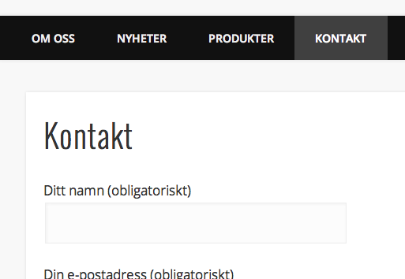
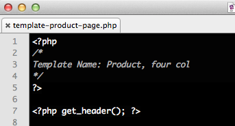
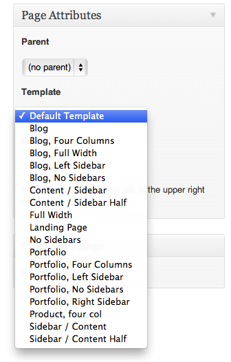
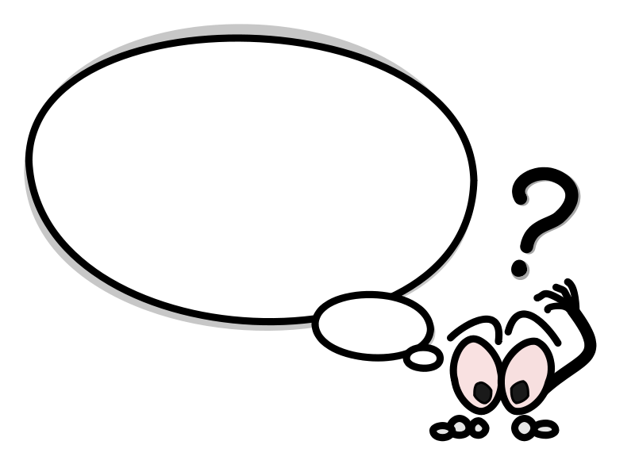
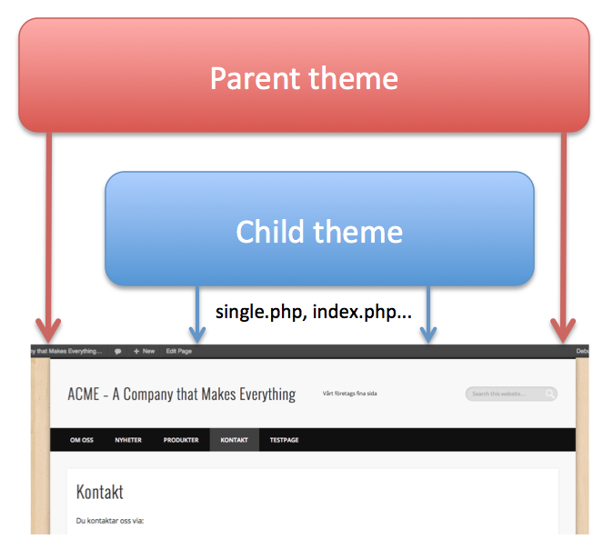
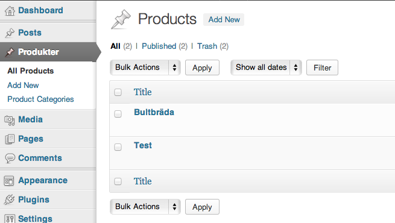
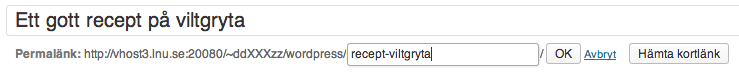

Web Management, 1IK424
Linnéuniversitetet, VT2013
Wordpress part III
Agenda
- Page, Page template
- Att välja tema
- Child Themes
- Custom Post Type
- SEO - Att tänka på vid sökmotoroptimering
- Tips till projektet
Pages
- Är ämnade för "statiskt" innehåll
- En sida tilldelas en "Page template" (default page.php)
- Du kan skapa en uppsättning av "Page Templates" där du presenterar information


Att skapa statiska sidor
Skapa en statisk sida och placera i en dynamisk meny
Använd "default template".
Gör denna sida till startsida och placera bloggflödet i en annan sida.

Skapa En startsida och en nyhetssida, lägg i menyn
Visa hur man ändrar till en annan startsida
Pages templates
Visa sidor har två kolumner, andra tre o.s.v.
Genom att skapa egna Page Templates kan du tilldela olika sidor olika utseenden.
En page templete skapas i en egen fil


Skapa två template som visar olika kategorier på olika sätt
Att använda andras teman
- Man lär sig genom att studera andras teman
- Får design, struktur och massor av funktionallitet
- Kunna manipulera de delar man vill
- Det svåra är att hitta rätt tema just för dig
När du väljer ett tema
- Utseende, layout
- Licens - Vad krävs för att få använda det?
- Vad tycker andra?
- Enkelhet att modifiera? Custum headers, custom background (sid 152-153)
- Hur välstrukturerat ser det ut, filmässigt och kodmässigt
- Prestanda, hur snabbt laddar det?
- Testa i olika webbläsare! Mobila webbläsare?
- Vinner man något på att utgå från en annans tema
Taktik vid befintliga teman
Man kan såklart kopiera och ändra i det befintliga temats filer.
Vad händer om temat uppdateras med ny funktionalitet?

Att bara modifiera det man vill?
Men jag vill ju kunna ta ett färdigt tema och bara lägga på mina förändingar.
Detta bör ske separat från det färdiga temat...
Hur gör jag?
Child Theme

Man "ärver" ner egenskaper från ett befintligt "parent theme"
Du byter ut de delar du vill förändra, egna sidor, egen css ect.
Ett child theme skapas i en egen mapp, med egna filer
Hur!?
- Ladda ner ett tema och lägg som vanligt i wp-content/themes
- Skapa en ny mapp i wp-content/themes för ditt child-theme. Aktivera temat.
- Skapa filen style.css som vanligt och lägg till raden "Template"
...
Template: pinboard
...
- Importera CSS in i ditt childtheme
/* i child-themes style.css */
@import url('../pinboard/style.css');
Att skapa ett child theme...
Custom post types
Du kan skapa egna "posttyper"

Du kan även skapa egna kategorier till din posttyp
Ta steget från blogg till CMS
Custom post types - DEMO
Att skapa en egen custom post type i olika kategorier
och visa en sida med dessa
Dölja saker i admingränssnittet
För att ge en enklare bild av administrationsgränssnittet
http://sethstevenson.net/customize-the-wordpress-admin-menu-based-on-user-roles/
SEO - Search Engine Optimization
- Validerad kod (http://validator.w3.org/)
- Sökmotorer gillar bra kodade HTML-sidor
- Bra beskrivande permalänkar
-
"page-slug". "remove stopwords"

- Kategorier, Tags (etiketter), keywords
- Lägg lite tid på hur du kan kategorisera den
SEO - forts.
Dynamisk <title>
<title><?php bloginfo('name'); ?> <?php wp_title(); ?></title>
Använd rubriknivåer, h1, h2 o.s.v.
Det är viktigt att man tänker på hur man skriver.
Nyckelord tidigt i texten.
Laddningstid
En snabbladdad sida är viktigt även för sökmotorer
SEO - forts.
XML Sitemaps
En XML-fil som bewskriver webbplatsen för sökmotorn.
Breadcrums
Hjälper sökmotorn att strukturerar upp webbplatsen.
Skapa en bra sida folk länkar till!
Det viktigaste är en bra webbplats som folk vill länka till.
Självstudie
Delar som inte tagits upp på föreläsningar men som finns beskrivet i kurslitteraturen
- Språkstöd
- Custom types
- Meta boxex
- Social Media (kapitel 10)
Tips till projektet
- Dela upp arbetet!
- Fokusera i första hand på de grundläggande funktionerna
- Det finns plugin som kan ge efterfrågad funktionalitet!
- "Google is your friend"
 Detta verk är licensierat under en
Creative Commons Erkännande-IckeKommersiell-DelaLika 3.0 Unported Licens.
Detta verk är licensierat under en
Creative Commons Erkännande-IckeKommersiell-DelaLika 3.0 Unported Licens.